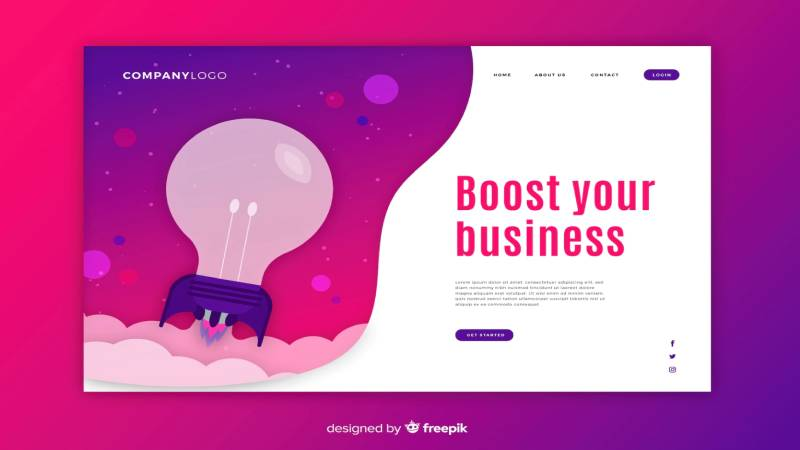

MIS PROYECTOS

AUPUR TV
Cuenta con una valoración o calificación del desempeño de los trabajadores que permite a los mandos superiores informar de cómo se están desarrollando sus funciones dentro de la empresa, al igual que el inventario de esta.

GEP
Gestor de Paquetes de Envíos es un sistema por medio del cual los usuarios pueden programar la recogida de paquetes para su futuro envío y los repartidores poder recoger estos paquetes y entregarlos a tiempo.